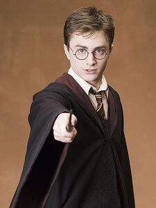

|  | HARRY POTTER HARRY LOVE HIS FAMILY Harry James Potter is a fictional character and the titular protagonist in J. K. Rowling's series of eponymous novels. The majority of the books' plot covers seven years in the life of the orphan Harry, who, on his eleventh birthday, learns he is a wizard. Thus, he attends Hogwarts School of Witchcraft and Wizardry to practise magic under the guidance of the kindly headmaster Albus Dumbledore and other school professors along with his best friends Ron Weasley and Hermione Granger. Harry also discovers that he is already famous throughout the novel's magical community, and that his fate is tied with that of Lord Voldemort – the internationally feared Dark Wizard and murderer of his parents, Lily and James. The book and film series revolve around Harry's struggle to adapt to the wizarding world and defeat Voldemort. Harry is regarded as a fictional icon and has been described by many critics, readers, and audiences as one of the greatest literary and film characters of all time. According to Rowling, the idea for both the Harry Potter books and its eponymous character came while waiting for a delayed train from Manchester, England to London in 1990. She stated that the idea of "this scrawny, black-haired, bespectacled boy who didn't know he was a wizard became more and more real to me".[2] While developing the ideas for her book, she also decided to make Harry an orphan who attended a boarding school called Hogwarts. She explained in a 1999 interview with The Guardian: "Harry had to be an orphan—so that he's a free agent, with no fear of letting down his parents, disappointing them ... Hogwarts has to be a boarding school—half the important stuff happens at night! Then there's the security. Having a child of my own reinforces my belief that children above all want security, and that's what Hogwarts offers Harry."[3] Her own mother's death on 30 December 1990 inspired Rowling to write Harry as a boy longing for his dead parents, his anguish becoming "much deeper, much more real" than in earlier drafts because she related to it herself.[2] In a 2000 interview with The Guardian, Rowling also established that the character of Wart in T. H. White's novel The Once and Future King is "Harry's spiritual ancestor."[4] Finally, she established Harry's birth date as 31 July, the same as her own. However, she maintained that Harry was not directly based on any real-life person: "he came just out of a part of me".[5] Rowling has also maintained that Harry is a suitable real-life role model for children. "The advantage of a fictional hero or heroine is that you can know them better than you can know a living hero, many of whom you would never meet [...] if people like Harry and identify with him, I am pleased, because I think he is very likeable."[6] Harry Potter books Harry Potter and the Philosopher's Stone Harry first appears in Harry Potter and the Philosopher's Stone. Starting in 1981,[7] when Harry was just one year old, his parents, James and Lily, ack story was a matter of reverse planning: "The basic idea [is that] |